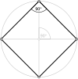

square

Definition: In Euclidean geometry, a square is a regular quadrilateral, which means that it has four equal sides and four equal angles (90-degree angles, π/2 radian angles, or right angles). It can also be defined as a rectangle with two equal-length adjacent sides. It is the only regular polygon whose internal angle, central angle, and external angle are all equal (90°), and whose diagonals are all equal in length. A square with vertices ABCD would be denoted
Source: Wikipedia
Wikipedia Page
Wikidata Page